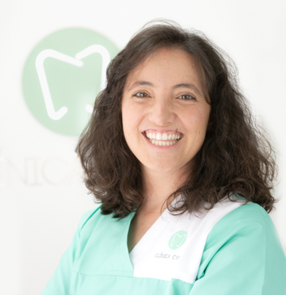

DRA. ANA QUARESMA
Ortodontia|Alinhadores Invisíveis |OFM
Formação e percurso +
OMD nº 7459
2021 – Micro-implantes Ortodônticos – Hands-On Clínico, Dra. Patrícia Vergara
2020-2021- Curso: Ortopedia Funcional dos Maxilares (OFM) em alto Nível, Dr. Sérgio Terçarolli
2020 – Masterclass – “Invisalign® First & Teen”, Instituto Universitário Egas Moniz, Dra. Esmeralda Herrero
2019-2021 – Curso Modular de Ortodontia Bio-Fisio-Lógica, Dra. Patrícia Vergara
2018 – Curso Avançado de Ortodontia Crânio Mandibular, Dra. Alexandra Londoño e Dr. Miguel Assis (VieSID Colombia)
2018 – Curso: Ajustes oclusais, Pistas Diretas Planas e/ou Desgastes Seletivos, Dr. Sérgio Terçarolli
2017-2018 – Curso: Reabilitação Neuro-Oclusal, Centro de Estudios Rehabilitación Neuro-Oclusal – Dentoclinic, Dr. Carlos de Salvador Planas e Dra. Catalina Canalda2017 – Certificação Smilers® – Invisible Aligners, CID Formation – Medical Training Center
2016 – Pós-Graduação: Ortopedia Funcional dos Maxilares, Wilma Simões European Institute – Lisbon School of Functional Jaw Orthopedics
2014-2015 – Pós-Graduação: Ortodontia Interceptiva, Instituto Superior de Ciências da Saúde Egas Moniz
2013-2014 – Pós-graduação: Ortodontia e Ortopedia Dento-Facial, PFR Formação
desde 2012 – Membro da Consulta Assistencial de Ortodontia no Instituto Universitário Egas Moniz
2004-2010 – Mestrado Integrado em Medicina Dentária, Faculdade de Medicina Dentária da Universidade de Lisboa
2021 – Micro-implantes Ortodônticos – Hands-On Clínico, Dra. Patrícia Vergara
2020-2021- Curso: Ortopedia Funcional dos Maxilares (OFM) em alto Nível, Dr. Sérgio Terçarolli
2020 – Masterclass – “Invisalign® First & Teen”, Instituto Universitário Egas Moniz, Dra. Esmeralda Herrero
2019-2021 – Curso Modular de Ortodontia Bio-Fisio-Lógica, Dra. Patrícia Vergara
2018 – Curso Avançado de Ortodontia Crânio Mandibular, Dra. Alexandra Londoño e Dr. Miguel Assis (VieSID Colombia)
2018 – Curso: Ajustes oclusais, Pistas Diretas Planas e/ou Desgastes Seletivos, Dr. Sérgio Terçarolli
2017-2018 – Curso: Reabilitação Neuro-Oclusal, Centro de Estudios Rehabilitación Neuro-Oclusal – Dentoclinic, Dr. Carlos de Salvador Planas e Dra. Catalina Canalda2017 – Certificação Smilers® – Invisible Aligners, CID Formation – Medical Training Center
2016 – Pós-Graduação: Ortopedia Funcional dos Maxilares, Wilma Simões European Institute – Lisbon School of Functional Jaw Orthopedics
2014-2015 – Pós-Graduação: Ortodontia Interceptiva, Instituto Superior de Ciências da Saúde Egas Moniz
2013-2014 – Pós-graduação: Ortodontia e Ortopedia Dento-Facial, PFR Formação
desde 2012 – Membro da Consulta Assistencial de Ortodontia no Instituto Universitário Egas Moniz
2004-2010 – Mestrado Integrado em Medicina Dentária, Faculdade de Medicina Dentária da Universidade de Lisboa